Doprava
Radar na Zámostku
Příprava je téměř u konce. Nyní čekáme na vyjádření dotčených orgánů. Chceme navázat na dosavadní práci a projekt dotáhnout do konce.
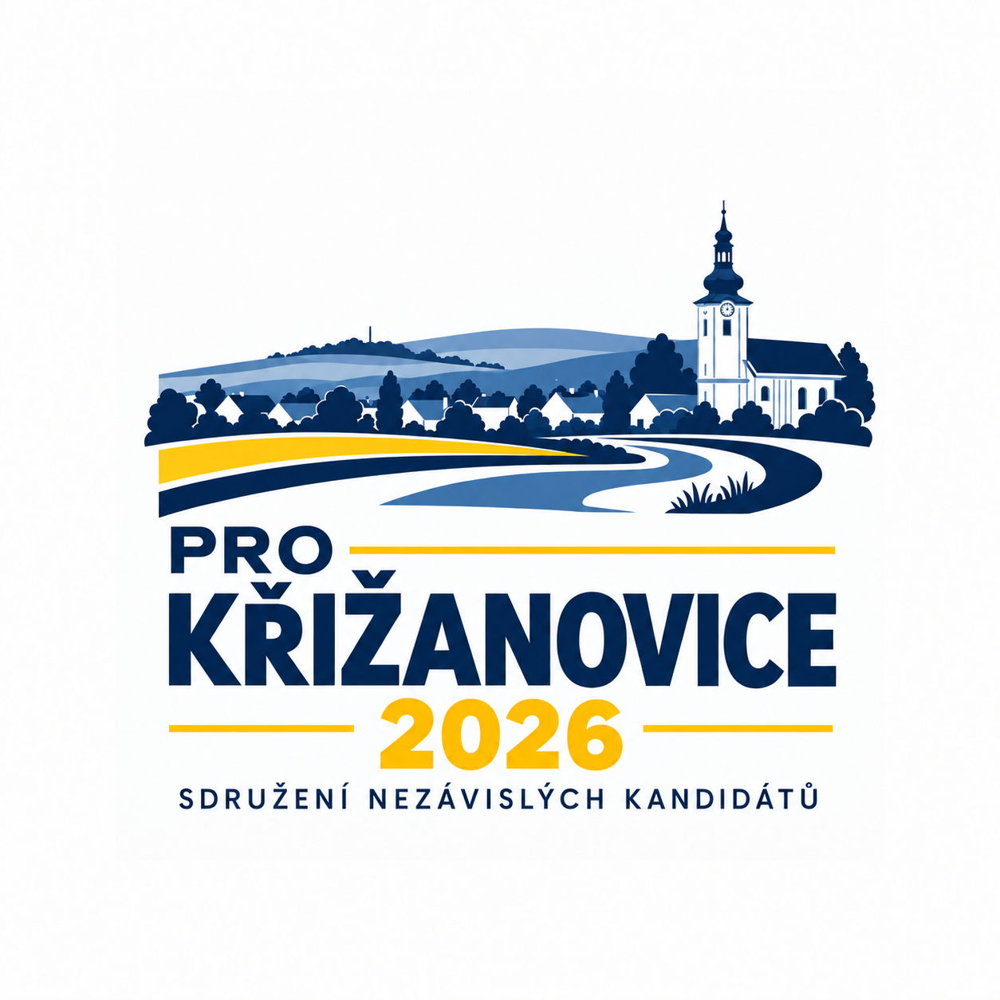
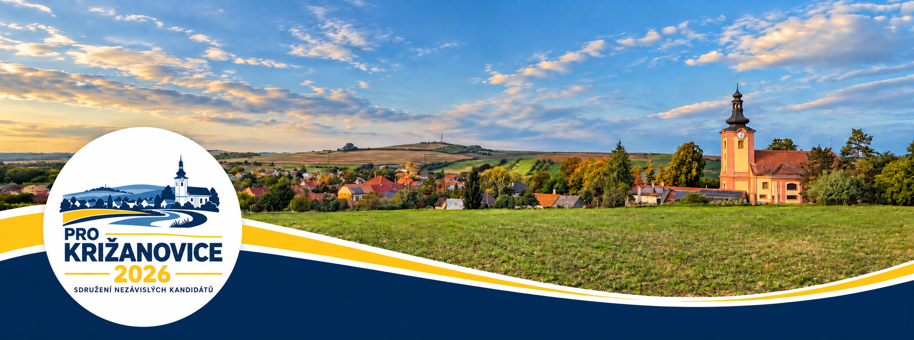
Náš přístup
Bez velkých gest. S konkrétními kroky.
Dotáhneme rozpracované projekty a navážeme na to, co v obci dává smysl.
Nové záměry připravíme s využitím dostupných dotací a s respektem k charakteru obce.
01 / Rozpracované projekty
Rozdělané věci dotáhneme.
Doprava
Příprava je téměř u konce. Nyní čekáme na vyjádření dotčených orgánů. Chceme navázat na dosavadní práci a projekt dotáhnout do konce.
Veřejný prostor
Budeme pokračovat ve zvelebování prostoru kolem mateřské školy: navazující úpravy včetně obrubníků, výsadba zeleně a úpravy parkovacích míst.
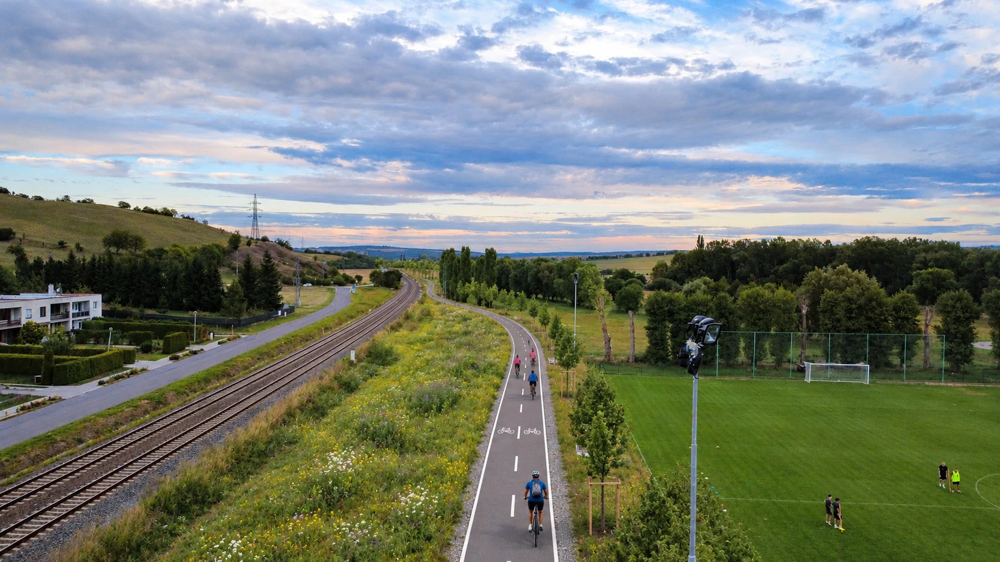
Propojení obcí
Dokončujeme úkony nutné pro podání žádosti o stavební povolení. Chceme dovést přípravu k realizaci a využít odpovídající dotační podporu.
Pohyb po obci
Budeme pokračovat v postupných opravách. Zpracované projekty máme na opravu chodníku od přejezdu k mostu a na nový chodník od čp. 86 po přejezd.
Krajina a voda
Pokračujeme v jednáních s Lesy ČR, s. p., o revitalizaci a zpracování projektu. Jde o dlouhodobý úkol. Ve svém úsilí nepolevíme a chceme přípravu posouvat dál.
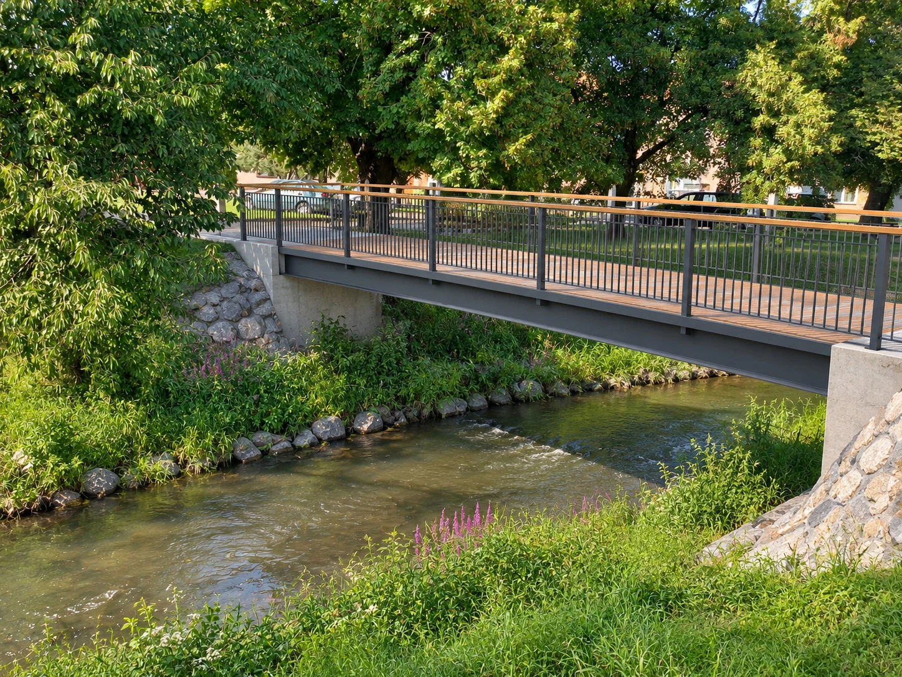
Konkrétní projekt
Čekáme na dokončení projektu. Následovat má podání žádosti o stavební povolení. Předpokládaná realizace: do konce roku 2027.
Život v obci
Budeme pokračovat v podpoře našich spolků a jejich aktivit finanční, materiální i praktickou pomocí. Všechny spolky v Křižanovicích budou mít naši podporu i v dalších letech.
02 / Další výzvy a cíle
S respektem k obci.
S využitím dostupných dotací.
Podoba obce
V mezích zákona využijeme územní plán i vyjádření obce ve stavebním řízení. Případná nová zástavba má respektovat ráz obce a mít vyřešenou dopravu i sítě.
Dlouhodobý problém
Jsme připraveni být aktivním partnerem při řešení situace v areálu bývalého statku. Budeme zasílat písemné podněty příslušným úřadům a důsledně sledovat, jak byly vyřízeny.
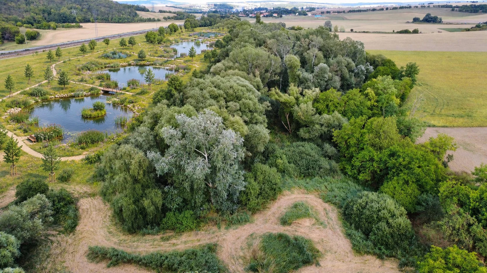
Krajina a voda
Jeden projekt, tři užitky: zpomalit přívalovou vodu, zadržet vodu v krajině v suchých měsících a vytvořit místo na procházku v dostupné vzdálenosti. Počítáme s využitím dotací.
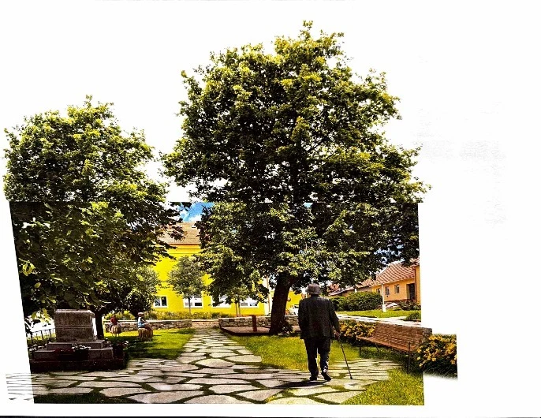
Veřejný prostor
Revitalizujeme park a upravíme bezprostřední okolí školy. Chceme vytvořit další místo pro odpočinek a setkávání nejen dětí.
Volný čas
Vytvoříme nová místa pro herní a volnočasové aktivity. Počítáme například s kuželkami, tabulí na kreslení a dalšími prvky podle návrhů občanů.
Energetický audit
Zajistíme profesionální prověření obecních budov a veřejného osvětlení ve spolupráci s Jihomoravskou energetickou agenturou JIMEG. Přijmeme doporučená opatření vedoucí ke snížení spotřeby energií.
Společný základ našich projektů
Křižanovice mají zůstat místem, které má svůj charakter a kde se dobře žije.
Lidé za programem
Všichni kandidáti jsou bez politické příslušnosti.
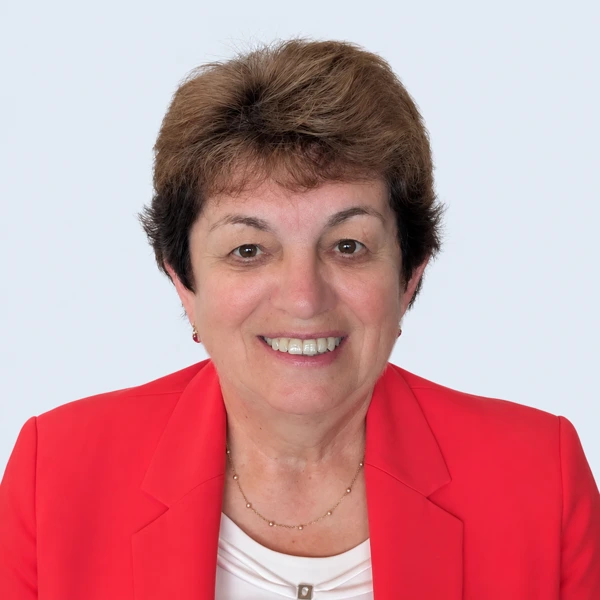
163 let
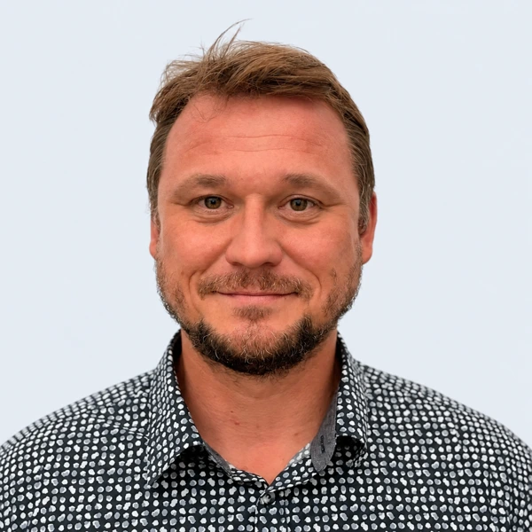
241 let
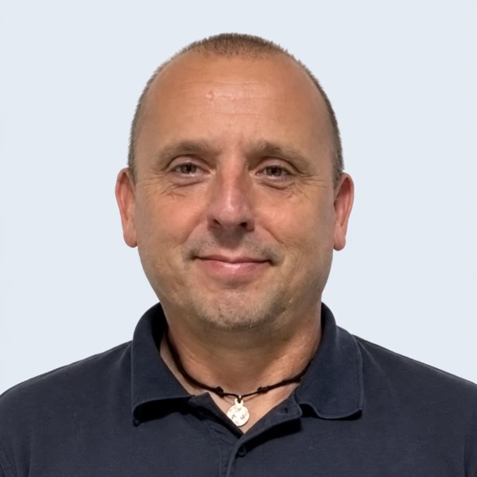
352 let
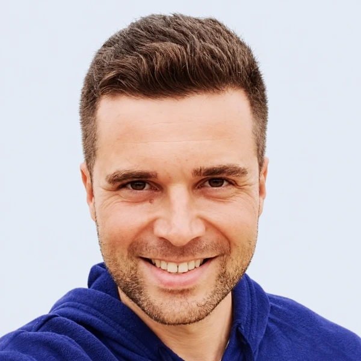
440 let
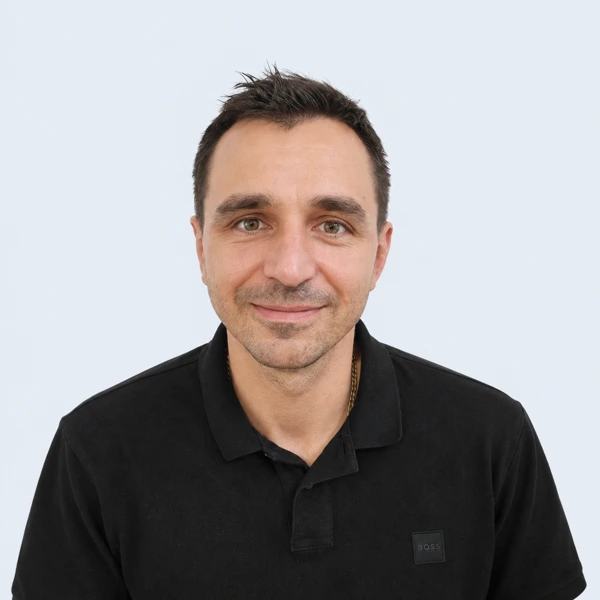
539 let
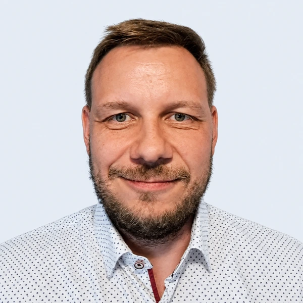
642 let
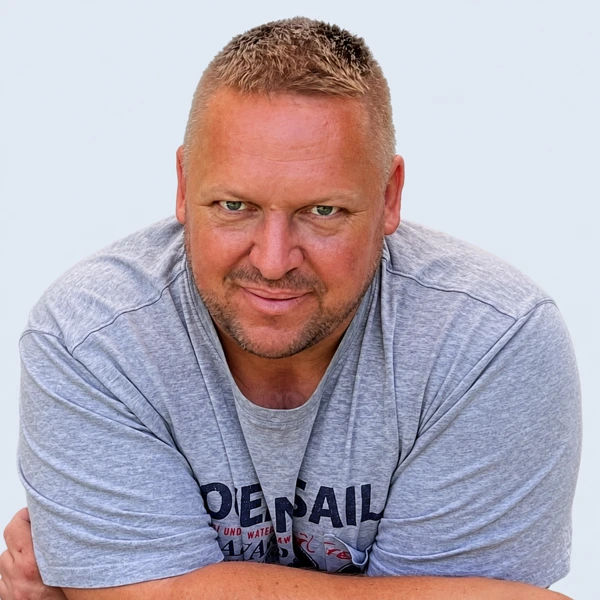
748 let
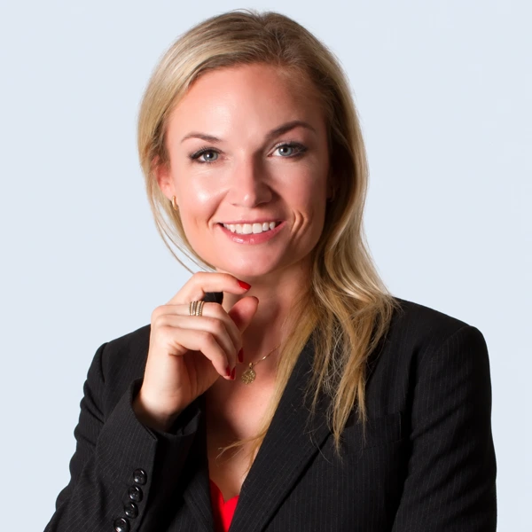
841 let
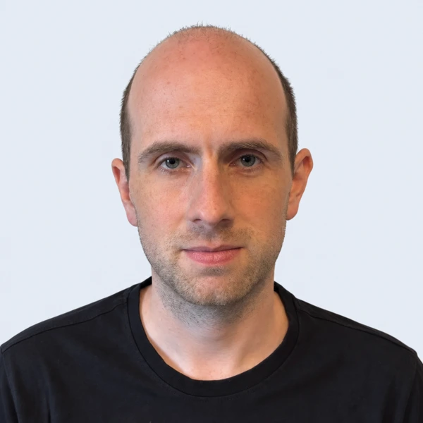
932 let
Volby do zastupitelstva obce
9. a 10. října 2026
O Křižanovicích rozhodnou ti, kdo přijdou.
Jak volit
Označte křížkem pouze velký čtverec u názvu našeho sdružení.
Křížky u kandidátů jiných sdružení nebo stran přidělí část hlasů i jim. Počet hlasů odpovídá počtu volených zastupitelů.
Podle volebního letáku se v obci volí 9 zastupitelů, každý volič tedy má 9 hlasů.
Jednotliví kandidáti: Křížkujte malé čtverečky u jmen kandidátů z různých kandidátek. Nesmíte označit více kandidátů, než je počet volených zastupitelů.
Kombinace: Označte jednu stranu a jednotlivé kandidáty z jiných stran. Hlasy získají nejprve jednotlivě označení kandidáti; zbývající hlasy získají kandidáti označené strany podle pořadí na volebním lístku.